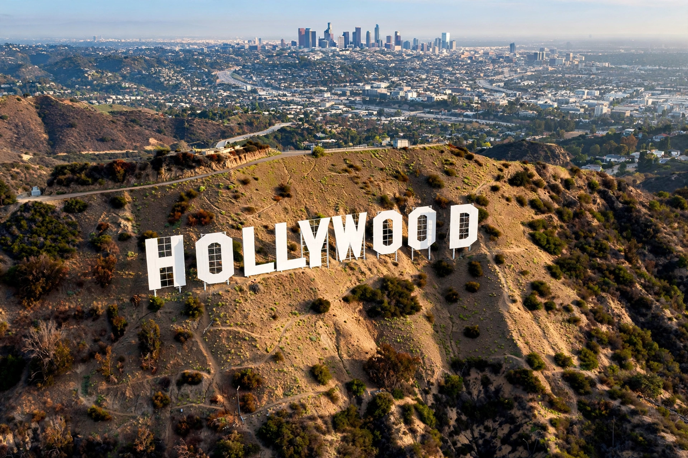

Hollywood
From Wikipedia, the free encyclopedia

Hollywood is a neighbourhood of Los Angeles, California, that is the historic centre of the American film industry and a global metonym for it. From the 1910s, producers fleeing Edison's patent trust and seeking sunshine built studios there; by the 1920s the 'studio system' made Hollywood synonymous with cinema itself. The famous Hollywood Sign, erected in 1923 to advertise a housing development, remains its emblem.
History
Filmmakers arrived from 1907; D. W. Griffith shot In Old California (1910) there, and the first studio (Nestor) opened in 1911. The majors — Paramount, Warner Bros., MGM, RKO, 20th Century Fox — vertically integrated production, distribution and theatres, running a star factory through the Golden Age (1930s–40s). The 1948 Paramount Decrees broke the monopolies; television, suburbanisation and runaway production dispersed the industry, though 'Hollywood' retained the name.
The district today
The neighbourhood declined mid-century and has been partly revived since the 2000s: landmarks include the Dolby Theatre (home of the Academy Awards), the Hollywood Walk of Fame, Grauman's Chinese Theatre, the Capitol Records Building and the Hollywood Bowl. Major studio facilities now cluster in Burbank, Culver City and Studio City as much as in Hollywood proper, and streaming-era production is global — though deal-making power still concentrates in Los Angeles.
In world culture
'Hollywood' connotes glamour, celebrity and formulaic spectacle; national cinemas define themselves against or alongside it — Bollywood, Nollywood, Pinewood, and the 'Hollywood of the North' — while critics debate its cultural imperialism and its internal reforms over diversity and labour.